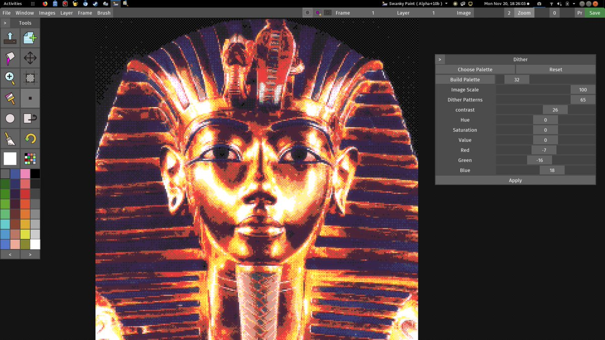

https://twitter.com/davidcapello/status/935873950281760768 @davidcapello @Microsoft @msdev Oh yes, it was a pretty terrible editor, sorry I missed the "good" bit. Late 90s I would have been using promotion for any actual editing of icons and then jumping through whatever hoops Microsoft required to use them.
https://twitter.com/davidcapello/status/935848019731337218 @davidcapello @Microsoft @msdev Didn't visual studio have some sort of .ico editor? I guess I must have imagined using that, it is a memory from a long time ago.
Due to the power of compound reductions. Dr.B is now -1p when you pick it up in a bundle with Swanky Paint.
http://store.steampowered.com/bundle/2157/Everything_Wetgenes/
Yes, negative one pence and that's cutting me own throat that is.

and the inspiration for Mario. https://twitter.com/41Strange/status/935246229159665664
Fingers crossed that this doesn't get patched out in the next update. https://twitter.com/nigewillson/status/934413766841782273
Excite bike is for 'merkins I think you will find that the Brits played Kikstart (2).
I don't think I even knew anyone who had a NES back in the 80s, it was 48Ks and C64s all the way down. https://twitter.com/RetEvents/status/932964014845513729
https://twitter.com/MartinCaine/status/932967371777638400 @MartinCaine It does but y'know, not very much. I'd say it has already hit a point where fake game content and card farming is more damaging to steam than any income.
https://twitter.com/MartinCaine/status/932912951421489152 @MartinCaine The count down to the moment when steam games only drop cards if you buy them direct from steam continues.
https://twitter.com/Tanukitsune/status/932914718246932481 @Tanukitsune Stage one is a test of endurance as you repeatedly hit the retry button.
This is one of my favourite arcade games and I have never actually seen a real machine. https://twitter.com/ArcadeClubTech/status/932639492531544064
Swanky Paint is gaining some real time dynamic palette and dithering options when loading in a 24bit image. Before it just made a rather bad guess, now it makes good guesses :)
https://notshi.github.io/printscreen/blog/2017-11-20-18-26-43-fatso-kriss/

Well, I would go with Punisher... but I'd be thinking of Rorschach.
@magic_bane @CharlotteGore Doesn't matter, any hardware can fail so you never get to be sure which part of the chain is broken until you test every damn part.
@magic_bane @CharlotteGore Ah, I thought you picked up one second hand.
Usually a power problem then but I'm sure you know that.
@magic_bane @CharlotteGore I mean, did you managed to get one that had been previously used...
@magic_bane @CharlotteGore Fail under heavy load?
Isn't that how bitcoin mining breaks cards?
@CharlotteGore Have you tried Zack and Wiki? It is the most "modern" point and click I've played. Not everything they do works but it is a really interesting attempt to do something different.
Although it could do with having all the motion waggling removed, like so many other Wii games.
https://twitter.com/pixelvision8/status/930983113542504448 @pixelvision8 If you want an algorithm then a travelling salesman in RGB space has worked well for me.
I just do a simple greedy algo starting from each index and then pick the shortest of these paths as the palette order.
One of the best things about this movie is the distance fog darkness combined with untextured levels lit by a handful of primary colour lights.
Also plenty of lens flare. https://twitter.com/OnePerfectShot/status/930982518949638144